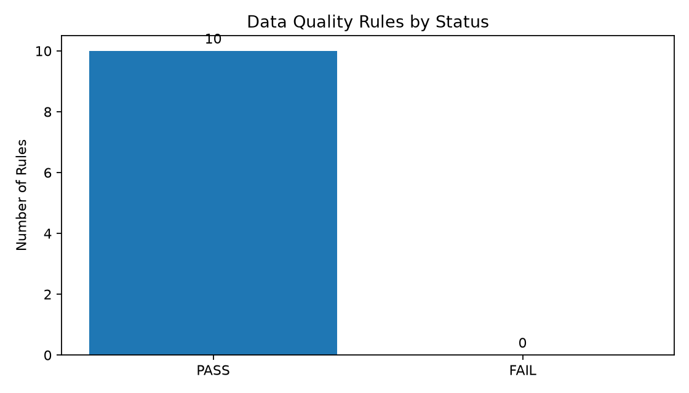
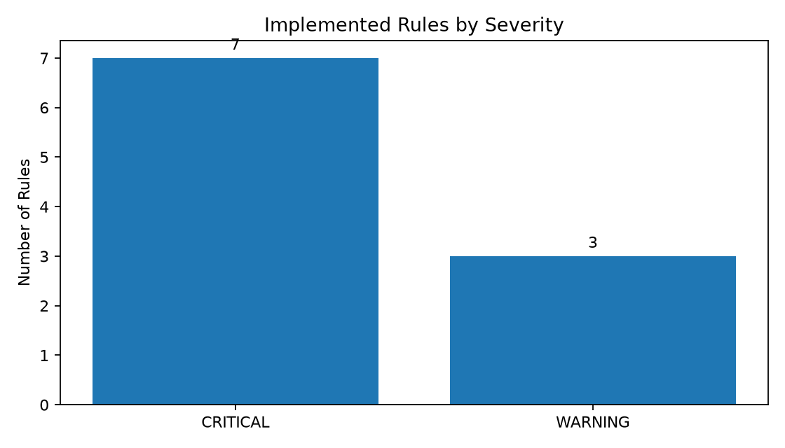

READY FOR REPORTING
Quality overview
Implemented rules
10
Passed rules
10
Failed rules
0
Failed critical rules
0
Rows checked
50,274,410
Overall failure rate
0.0000%
Latest validation run
Quality rule distribution


Latest data quality results
| Rule | Control | Severity | Table | Status | Rows checked | Rows failed | Failure rate |
|---|---|---|---|---|---|---|---|
| DQ001 | Required fields are populated in scheduled stop times | CRITICAL | fct_scheduled_stop_time | PASS | 7,151,705 | 0 | 0.0000% |
| DQ002 | Trip stop sequences are unique | CRITICAL | fct_scheduled_stop_time | PASS | 7,151,705 | 0 | 0.0000% |
| DQ003 | Scheduled stop times reference valid trips | CRITICAL | fct_scheduled_stop_time | PASS | 7,151,705 | 0 | 0.0000% |
| DQ004 | Scheduled stop times reference valid stops | CRITICAL | fct_scheduled_stop_time | PASS | 7,151,705 | 0 | 0.0000% |
| DQ005 | Scheduled times use a valid GTFS format | CRITICAL | fct_scheduled_stop_time | PASS | 7,151,705 | 0 | 0.0000% |
| DQ007 | Trips have at least one scheduled stop | CRITICAL | dim_trip | PASS | 203,056 | 0 | 0.0000% |
| DQ010 | Stop sequence is positive | CRITICAL | fct_scheduled_stop_time | PASS | 7,151,705 | 0 | 0.0000% |
| DQ006 | Departure is not earlier than arrival | WARNING | fct_scheduled_stop_time | PASS | 7,151,705 | 0 | 0.0000% |
| DQ008 | Routes have at least one planned trip | WARNING | dim_route | PASS | 231 | 0 | 0.0000% |
| DQ009 | Stop coordinates are plausible for the STM service area | WARNING | dim_stop | PASS | 9,188 | 0 | 0.0000% |
Dataset profile
| Dataset | Source table | Rows |
|---|---|---|
| Routes | dim_route |
231 |
| Stops | dim_stop |
9,188 |
| Trips | dim_trip |
203,056 |
| Scheduled stop times | fct_scheduled_stop_time |
7,151,705 |
| Shapes | raw_shapes |
211,100 |
Interpretation
This report evaluates the latest available static GTFS snapshot against the implemented quality controls. A PASS result means that no exception was detected for that rule during this run.
This report does not certify real-time feed availability, on-time performance, service reliability, or completeness beyond the controls currently implemented.